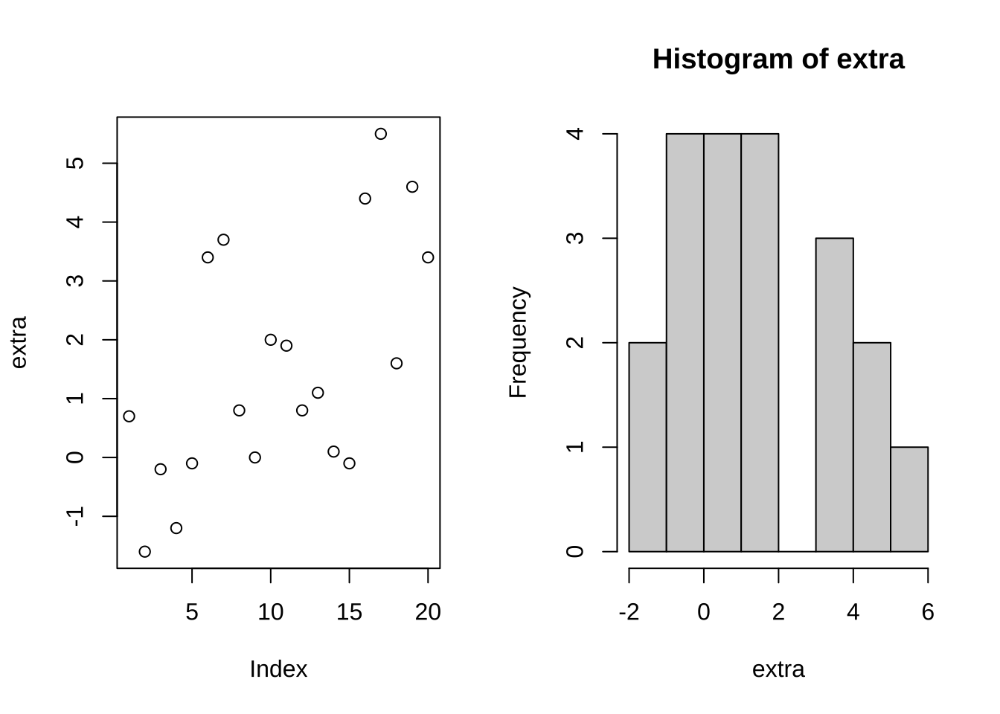
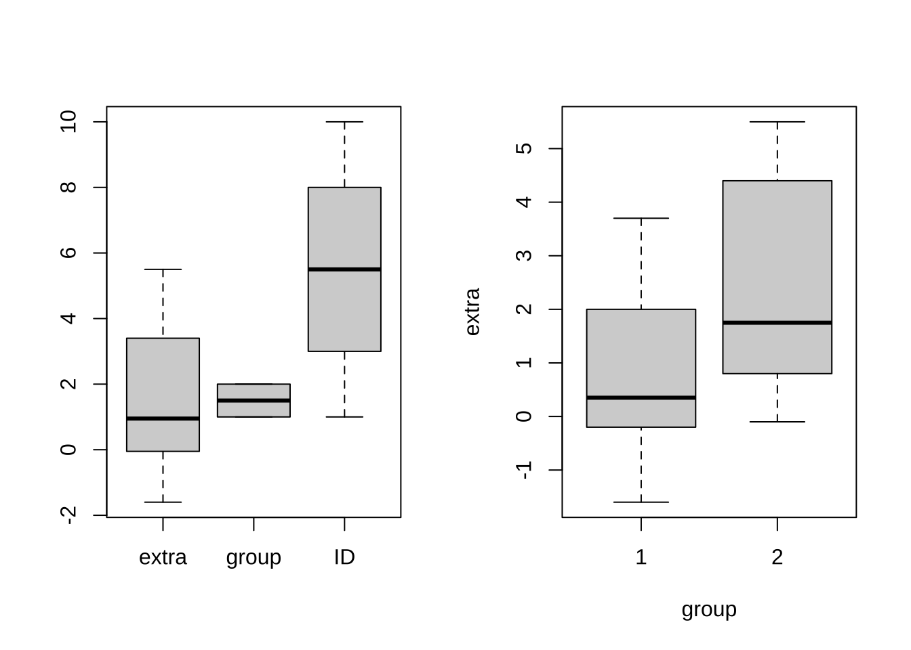
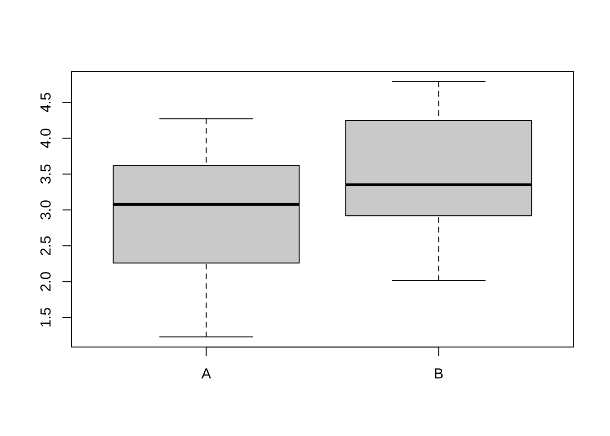
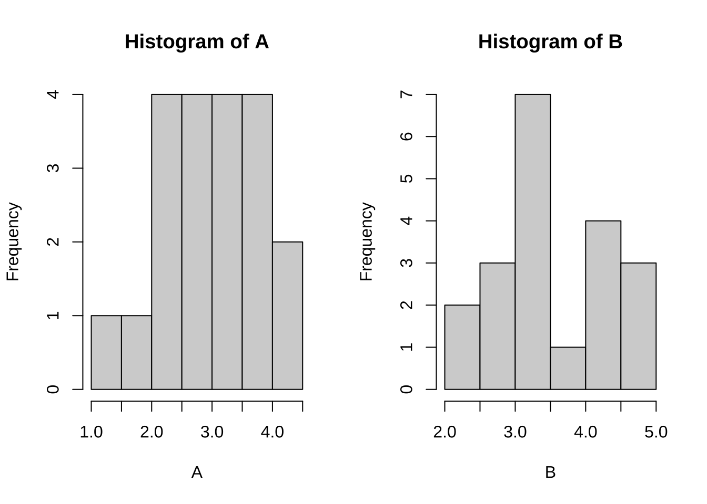
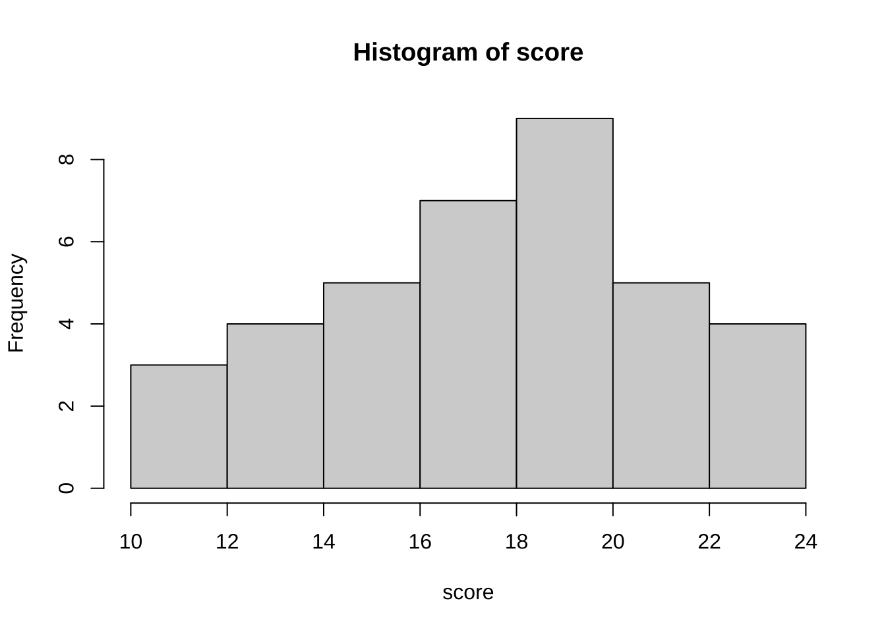
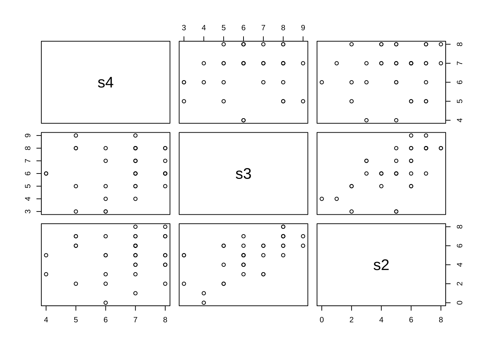
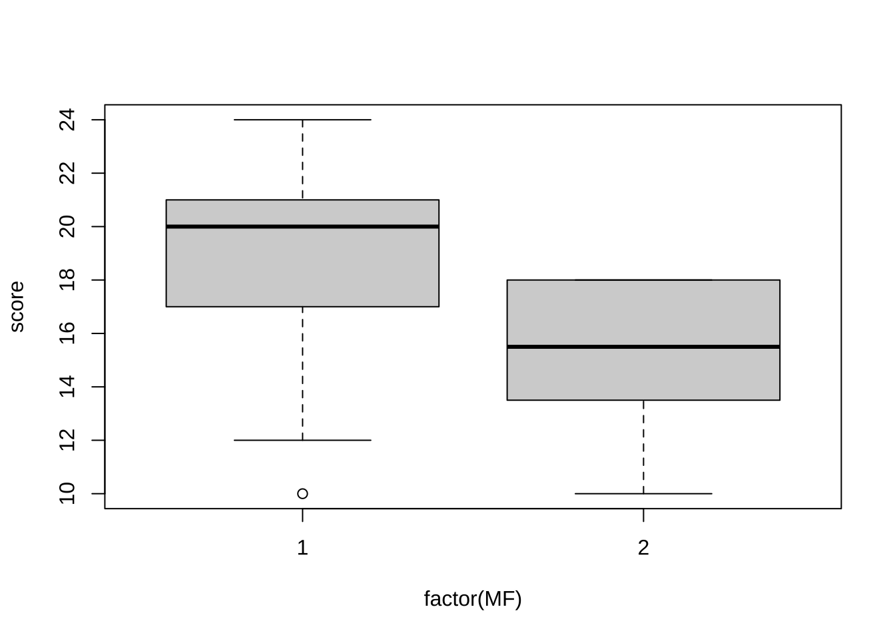
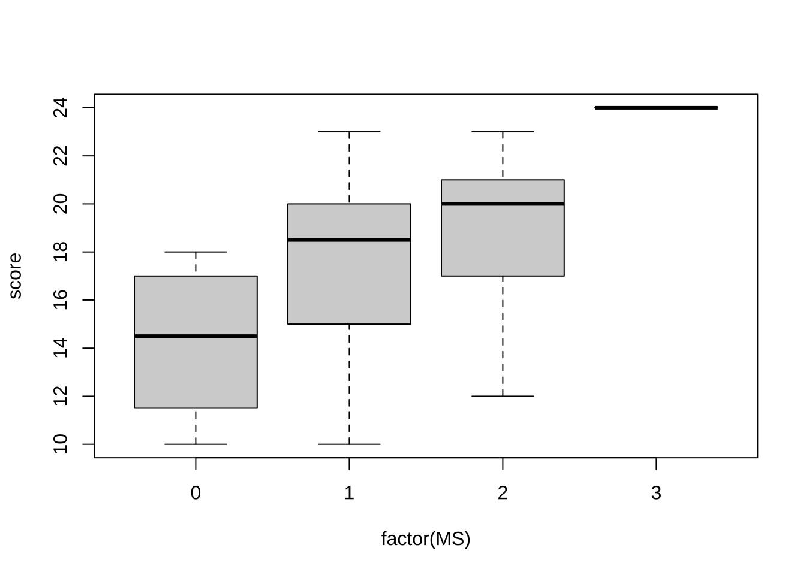

3 仮説検定
3.1 平均値の差の検定
# t.test(x, y = NULL,
# alternative = c("two.sided", "less", "greater"),
# mu = 0, paired = FALSE, var.equal = FALSE,
# conf.level = 0.95, ...)
#
#
# One Sample t-test
# Performs one and two sample t-tests on vectors of data.- 平均値の差の検定 (ペア検定)
# sleep: Rにデフォルトで収録されているデータ 患者10名, 2種類の睡眠薬の比較
# (コントロールに対する睡眠時間の増加分) help(sleep) Data which show the effect
# of two soporific drugs (increase in hours of sleep compared to control) on 10
# patients. (extra, group, ID) 20件, 患者(ID) 10名
head(sleep)
#> extra group ID
#> 1 0.7 1 1
#> 2 -1.6 1 2
#> 3 -0.2 1 3
#> 4 -1.2 1 4
#> 5 -0.1 1 5
#> 6 3.4 1 6
tail(sleep)
#> extra group ID
#> 15 -0.1 2 5
#> 16 4.4 2 6
#> 17 5.5 2 7
#> 18 1.6 2 8
#> 19 4.6 2 9
#> 20 3.4 2 10
attach(sleep)
par(mfrow = c(1, 2))
plot(extra)
hist(extra)
# t.test(extra)\t# 注) ペア検定ではない
# 両側検定
t.test(extra ~ group, paired = T) # ペア検定 (両側検定 (デフォルト))
#>
#> Paired t-test
#>
#> data: extra by group
#> t = -4.0621, df = 9, p-value = 0.002833
#> alternative hypothesis: true mean difference is not equal to 0
#> 95 percent confidence interval:
#> -2.4598858 -0.7001142
#> sample estimates:
#> mean difference
#> -1.58
# t.test(extra[group == 1], extra[group == 2], paired = TRUE)
# 片側検定
t.test(extra ~ group, paired = T, alternative = "greater") # 片側 (右側) 検定
#>
#> Paired t-test
#>
#> data: extra by group
#> t = -4.0621, df = 9, p-value = 0.9986
#> alternative hypothesis: true mean difference is greater than 0
#> 95 percent confidence interval:
#> -2.293005 Inf
#> sample estimates:
#> mean difference
#> -1.58
t.test(extra ~ group, paired = T, alternative = "less") # 片側 (左側) 検定
#>
#> Paired t-test
#>
#> data: extra by group
#> t = -4.0621, df = 9, p-value = 0.001416
#> alternative hypothesis: true mean difference is less than 0
#> 95 percent confidence interval:
#> -Inf -0.8669947
#> sample estimates:
#> mean difference
#> -1.58
boxplot(sleep) # bad example
# boxplot(extra)
boxplot(extra ~ group)
- 平均値の差の検定
# 口コミサイト(仮想データ) 2つの業種(A, B), 各20社
# 各企業に対する(元)従業員による平均評価点(1--5) x <- read.table('dat_1-1.csv',
# sep = ',', header = T)
x <- read.csv("dat_1-1.csv", header = T)
boxplot(x)
attach(x)
t.test(A, B)
#>
#> Welch Two Sample t-test
#>
#> data: A and B
#> t = -2.0822, df = 37.963, p-value = 0.04412
#> alternative hypothesis: true difference in means is not equal to 0
#> 95 percent confidence interval:
#> -1.097472 -0.015428
#> sample estimates:
#> mean of x mean of y
#> 2.94290 3.49935
## 正規性の検定
par(mfrow = c(1, 2))
# ks.test(A, 'pnorm'); ks.test(B, 'pnorm')\t\t# コルモゴロフ・スミルノフ
# (Kolmogorov-Smirnov) 検定 shapiro.test(A); shapiro.test(B)\t#
# シャピロ・ウィルク (Shapiro-Wilk) 検定 qqnorm(A); qqnorm(B)\t# q-qプロット
hist(A)
hist(B)
- 平均値の差の検定 (ノンパラメトリック検定)
- 順位和検定: ノンパラメトリック検定の一手法
- 外れ値に対して頑強
3.2 カイ二乗検定
# chisq.test(x, y = NULL, correct = TRUE,
# p = rep(1 / length(x), length(x)), rescale.p = FALSE, simulate.p.value = FALSE, B = 2000)
# chisq.test performs chi-squared contingency table tests and goodness-of-fit tests.3.2.1 独立性検定
# 演習用データの作成 (実務では, ファイルを読み込む)
d1 <- matrix(c(rep(c("a1", "b1"), 76), rep(c("a1", "b2"), 15), rep(c("a1", "b3"),
41)), byrow = T, ncol = 2)
d2 <- matrix(c(rep(c("a2", "b1"), 95), rep(c("a2", "b2"), 30), rep(c("a2", "b3"),
85)), byrow = T, ncol = 2)
d3 <- matrix(c(rep(c("a3", "b1"), 135), rep(c("a3", "b2"), 70), rep(c("a3", "b3"),
95)), byrow = T, ncol = 2)
d4 <- matrix(c(rep(c("a4", "b1"), 69), rep(c("a4", "b2"), 10), rep(c("a4", "b3"),
29)), byrow = T, ncol = 2)
data2 <- rbind(d1, d2, d3, d4)
colnames(data2) <- c("A", "B") # 商品種類(A), 販売チャネル(B)
head(data2)
#> A B
#> [1,] "a1" "b1"
#> [2,] "a1" "b1"
#> [3,] "a1" "b1"
#> [4,] "a1" "b1"
#> [5,] "a1" "b1"
#> [6,] "a1" "b1"
table(data2) # marginal totals
#> data2
#> a1 a2 a3 a4 b1 b2 b3
#> 132 210 300 108 375 125 250
(tbl <- table(data2[, 1], data2[, 2])) # contingency table
#>
#> b1 b2 b3
#> a1 76 15 41
#> a2 95 30 85
#> a3 135 70 95
#> a4 69 10 29
chisq.test(data2[, "A"], data2[, "B"])
#>
#> Pearson's Chi-squared test
#>
#> data: data2[, "A"] and data2[, "B"]
#> X-squared = 27.661, df = 6, p-value = 0.0001088
# chisq.test(data2[, 1], data2[, 2])
# または
chisq.test(tbl)
#>
#> Pearson's Chi-squared test
#>
#> data: tbl
#> X-squared = 27.661, df = 6, p-value = 0.0001088# A/Bテスト サイト導線A/Bとで, コンバージョンへの効果を比較
# \t\t\t\t\t\t有\t\t\t\t無 \tサイト導線A\t50\t\t\t\t131
# \tサイト導線B\t23\t\t\t\t35
ABdat <- matrix(c(50, 131, 23, 35), ncol = 2, byrow = T)
chisq.test(ABdat)
#>
#> Pearson's Chi-squared test with Yates' continuity correction
#>
#> data: ABdat
#> X-squared = 2.4566, df = 1, p-value = 0.117
# 導線Aでコンバージョンしない人が10人増えた \t\t\t\t\t\t有\t\t\t無
# \tサイト導線A\t50\t\t\t141 \tサイト導線B\t23\t\t\t 35
ABdat2 <- matrix(c(50, 141, 23, 35), ncol = 2, byrow = T)
chisq.test(ABdat2)
#>
#> Pearson's Chi-squared test with Yates' continuity correction
#>
#> data: ABdat2
#> X-squared = 3.2764, df = 1, p-value = 0.07028
# Fisherの正確確率検定
fisher.test(ABdat2)
#>
#> Fisher's Exact Test for Count Data
#>
#> data: ABdat2
#> p-value = 0.06915
#> alternative hypothesis: true odds ratio is not equal to 1
#> 95 percent confidence interval:
#> 0.2796541 1.0568106
#> sample estimates:
#> odds ratio
#> 0.54104433.2.2 適合度検定
# メンデルのデータ（エンドウの交雑実験） 種子の特徴(形質), 黄色・丸い,
# 黄色・しわ, 緑色・丸い, 緑色・しわ
obs <- c(315, 101, 108, 32) # 観測度数
prob <- c(9, 3, 3, 1)/16 # 理論確率分布
chisq.test(obs, p = prob) # obs と prob を用いたカイ二乗検定
#>
#> Chi-squared test for given probabilities
#>
#> data: obs
#> X-squared = 0.47002, df = 3, p-value = 0.9254
# 確認用
ex <- prob * sum(obs)
chisq <- sum((obs - ex)^2/ex)
pval <- 1 - pchisq(chisq, 3)3.3 分析例: 統計テストデータ
testdat <- read.csv("BS_stattest.csv", header = F)
# year(学年), MF(性別:男性1女性2), AS(文理:文系1その他2理系3),
# math(数学履修年数), work(勤務年数), stat(統計学経験0-2),
# MS(経営科学好き嫌い0-3), s4(4級相当得点), s3(3級相当得点), s2(2級相当得点)
colnames(testdat) <- c("year", "MF", "AS", "math", "work", "stat", "MS", "s4", "s3",
"s2")
score <- apply(testdat[, c("s4", "s3", "s2")], 1, sum)
testdat2 <- cbind(testdat, score)
# モダンな方法 library(tidyverse) testdat2 <- testdat %>% mutate(score = s4 +
# s3 + s2)# データの要約 attach()を使わない場合: table(testdat2$MF) table(testdat2[,
# c('MF', 'AS')]) table(testdat2$s3)
attach(testdat2)
table(MF)
#> MF
#> 1 2
#> 29 8
table(MF, AS)
#> AS
#> MF 1 2 3
#> 1 17 3 9
#> 2 4 1 3
table(s3)
#> s3
#> 3 4 5 6 7 8 9
#> 3 2 5 10 5 10 2
summary(score)
#> Min. 1st Qu. Median Mean 3rd Qu. Max.
#> 10.00 16.00 18.00 17.97 20.00 24.00
fivenum(score)
#> [1] 10 16 18 20 24
hist(score)
# 相関係数 cor(testdat[, c('math', 's2')]) cor(testdat[, c('math', 's3')])
# cor(testdat[, c('math', 's4')])
cor(math, s2)
#> [1] 0.04241976
cor(math, s3)
#> [1] 0.2481946
cor(math, s4)
#> [1] 0.3205779
pairs(testdat[, 8:10])
# cor(testdat[, c('MS', 's4', 's3', 's2')])
cor(cbind(MS, s4, s3, s2))
#> MS s4 s3 s2
#> MS 1.0000000 0.2592955 0.4922877 0.2600562
#> s4 0.2592955 1.0000000 0.1315443 0.1245631
#> s3 0.4922877 0.1315443 1.0000000 0.6435060
#> s2 0.2600562 0.1245631 0.6435060 1.0000000
cor(MS, math)
#> [1] 0.2864297
# 箱ひげ図
boxplot(score ~ factor(MF)) # 2-level factor

# 平均値の差の検定
score_MF <- split(score, factor(MF))
t.test(score_MF$"1", score_MF$"2")
#>
#> Welch Two Sample t-test
#>
#> data: score_MF$"1" and score_MF$"2"
#> t = 2.8923, df = 13.276, p-value = 0.01237
#> alternative hypothesis: true difference in means is not equal to 0
#> 95 percent confidence interval:
#> 0.884667 6.063609
#> sample estimates:
#> mean of x mean of y
#> 18.72414 15.25000
# score2 <- testdat[, 's2'] score3 <- testdat[, 's3'] score4 <- testdat[, 's4']
# t.test(score4, score3, paired = T, alternative = 'greater') t.test(score3,
# score2, paired = T, alternative = 'greater')
# ペア検定
t.test(s4, s3, paired = T, alternative = "greater")
#>
#> Paired t-test
#>
#> data: s4 and s3
#> t = 0.87426, df = 36, p-value = 0.1939
#> alternative hypothesis: true mean difference is greater than 0
#> 95 percent confidence interval:
#> -0.2516528 Inf
#> sample estimates:
#> mean difference
#> 0.2702703
t.test(s3, s2, paired = T, alternative = "greater")
#>
#> Paired t-test
#>
#> data: s3 and s2
#> t = 5.305, df = 36, p-value = 2.95e-06
#> alternative hypothesis: true mean difference is greater than 0
#> 95 percent confidence interval:
#> 0.9212852 Inf
#> sample estimates:
#> mean difference
#> 1.351351
# 得点の差のt値の計算 (確認用)
m <- mean(s3 - s2)
v <- var(s3 - s2)
tt <- m/sqrt(v/(length(s3)))# var.test(x, y, ratio = 1,
# alternative = c("two.sided", "less", "greater"),
# conf.level = 0.95, ...)
# Performs an F test to compare the variances of two samples from normal populations.# aaa <- table(testdat[, c('MF', 'AS')])
aaa <- table(MF, AS)
chisq.test(aaa)
#>
#> Pearson's Chi-squared test
#>
#> data: aaa
#> X-squared = 0.18986, df = 2, p-value = 0.9094
# aaa <- table(testdat[, c('MS', 'AS')])
aaa <- table(MS, AS)
chisq.test(aaa)
#>
#> Pearson's Chi-squared test
#>
#> data: aaa
#> X-squared = 16.044, df = 6, p-value = 0.01352
detach(testdat2)